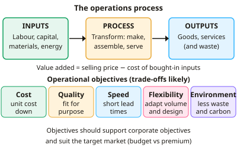

A-level Business Year 12 · Topic 6
Operations management
This topic covers operations management, how a business turns inputs into goods and services efficiently.
We measure productivity, unit costs and capacity utilisation, and compare production methods and the role of technology.
Then we look at lean production, inventory control, quality management and supply chains.
- 8 subtopics
- 411 questions
- Free: 6.1 notes and 10 questions
In this topic
- 6.1Operational objectives and the operations process (inputs, processes, outputs; cost, quality, speed, flexibility, environmental targets)Free below · 57 questions
- 6.2Productivity and efficiency: measuring labour productivity and unit costs, and improving themOpen in Full Marks · 56 questions
- 6.3Capacity and capacity utilisation: calculation, under- and over-capacityOpen in Full Marks · 61 questions
- 6.4Production methods (job, batch, flow, cell) and the role of technology in operationsOpen in Full Marks · 42 questions
- 6.5Lean production: waste reduction, kaizen and just-in-timeOpen in Full Marks · 46 questions
- 6.6Inventory management: stock control charts, buffer stock, lead time, JIT vs JIC and bottlenecksOpen in Full Marks · 48 questions
- 6.7Quality management: quality control, quality assurance, TQM and quality standardsOpen in Full Marks · 51 questions
- 6.8Supply chain management, procurement, outsourcing and supplier relationshipsOpen in Full Marks · 50 questions
6.1 · Free notes
Operational objectives and the operations process (inputs, processes, outputs; cost, quality, speed, flexibility, environmental targets)

Key points
- Operations management is about transforming inputs into outputs efficiently, so that goods or services are produced at the right cost, quality, speed and volume to meet customer needs.
- Inputs are the resources used: land, labour, capital (machinery, premises), raw materials, components, energy and information. These match the factors of production.
- The process (conversion or transformation) is what changes inputs into outputs. Examples are manufacturing, assembling, packaging and delivering a service such as a haircut or a hotel stay.
- Outputs are the finished goods and services sold to customers. They also include by-products and waste, which matters for environmental targets.
- Value added = selling price − cost of bought-in inputs. For example, a £55 table made from £20 of bought-in materials adds £35 of value. Higher value added means a better margin.
- The cost objective means lowering unit cost (total cost ÷ output). This allows lower prices or higher profit, and is often pursued through economies of scale, waste reduction and efficient use of resources.
- Quality means meeting customer expectations and being fit for purpose, with few defects, returns or complaints. It supports brand reputation and customer loyalty, and can justify premium prices.
- Speed covers lead time (time from order to delivery), time to market and delivery reliability. Flexibility is the ability to change output volume, product design or delivery schedule quickly in response to demand.
- Environmental objectives include cutting waste, carbon emissions and energy use, plus recycling and sustainable sourcing (e.g. ISO 14001). They respond to legislation and consumer pressure, but may raise short-term costs.
- Operational objectives trade off against one another. Rushing production (speed) can reduce quality, and high flexibility often raises unit cost. Firms prioritise according to their market, such as cost for a budget airline or quality for a luxury brand.
- Operational objectives must support corporate objectives such as profit or growth. In evaluation, judge which objective matters most for the specific business and whether the trade-offs are worthwhile.
In more detail
- Different priorities: a budget airline puts cost first, an ambulance service puts speed first, and a maker of heart valves puts quality first.
- Worked value added: a bakery sells 2,000 loaves at £2.50 using £1,800 of bought-in ingredients and packaging → value added = £5,000 − £1,800 = £3,200.
- Environmental target example: a target to cut packaging by 25% in three years reduces costs and waste, but it may need new machinery and changes to suppliers.
- ISO 14001: this international standard certifies a firm's environmental management system, showing customers and investors that it manages its environmental impact.
Practice
Operational objectives and the operations process (inputs, processes, outputs; cost, quality, speed, flexibility, environmental targets): 10 questions
Pick an answer to check it, or open the answer for the explanation.
1. Which of the following is an INPUT in the operations process of a sofa manufacturer?
- Scrap wood left over
- Delivery of sofas to customers
- Timber, foam and labour
- Finished sofas
Show answer
C: Timber, foam and labour. Inputs are the resources used in production, such as materials and labour. Finished sofas and scrap are outputs, and delivery is part of the process.
2. A bakery sells a loaf for £2.40. Ingredients and packaging bought in cost £0.90 per loaf. What is the value added per loaf?
- £3.30
- £2.40
- £1.50
- £0.90
Show answer
C: £1.50. Value added = selling price − cost of bought-in inputs = £2.40 − £0.90 = £1.50.
3. A firm cuts its average delivery time from 5 days to 2 days. Which operational objective is it mainly pursuing?
- Cost
- Quality
- Speed
- Environmental impact
Show answer
C: Speed. Reducing the time between order and delivery (lead time) is a speed objective.
4. A clothing supplier can switch quickly between three different product designs as retailers change their orders. This shows high:
- Productivity
- Value added
- Capacity utilisation
- Flexibility
Show answer
D: Flexibility. Flexibility is the ability to change product specification or volume at short notice.
5. A manufacturer shortens production time by cutting inspection stages. Which trade-off is most likely?
- Higher quality but slower output
- Faster output but lower quality
- Lower waste but higher unit costs
- Greater flexibility and higher quality
Show answer
B: Faster output but lower quality. Skipping inspection speeds up production but increases the risk of defects. Speed and quality often trade off.
6. Which is an example of an operational environmental target?
- Cut waste sent to landfill by 30% within two years
- Reduce the workforce by 5%
- Increase sales volume by 10%
- Raise prices by 5%
Show answer
A: Cut waste sent to landfill by 30% within two years. An environmental objective relates to waste, energy or emissions. The other options are pricing, sales or staffing targets.
7. A luxury handbag maker is most likely to give priority to which operational objective?
- Lowest possible unit cost
- Maximum output volume
- Superior quality, even at higher cost
- Fastest possible production regardless of finish
Show answer
C: Superior quality, even at higher cost. Premium brands compete on quality and exclusivity, so quality takes priority over minimising unit cost.
8. Which statement about operational objectives is correct?
- Cost must always be the top priority
- They should support corporate objectives and may conflict with each other
- They only apply to manufacturing firms
- They are identical for every business
Show answer
B: They should support corporate objectives and may conflict with each other. Operational objectives are set to deliver corporate aims and suit the market. They often involve trade-offs, such as speed against quality.
9. Which of these is part of the PROCESS stage rather than an input or output?
- Wages paid to staff
- Assembling components on a production line
- Packaged goods in the warehouse
- Steel delivered by a supplier
Show answer
B: Assembling components on a production line. The process is the transformation activity, such as assembly. Wages and steel are inputs, and packaged goods are outputs.
10. A firm switches to costly recycled packaging to meet its environmental objective. What is the most likely short-term effect?
- Higher unit costs
- Lower lead times
- Lower fixed costs
- Higher labour productivity
Show answer
A: Higher unit costs. Recycled or sustainable materials often cost more, so unit costs rise in the short term. This is a trade-off with the cost objective.
Keep going in Full Marks
Full Marks has 57 questions on Operational objectives and the operations process (inputs, processes, outputs; cost, quality, speed, flexibility, environmental targets) (47 more than here), set out in practice levels. You also get notes and 3D models for all 8 subtopics of Operations management, plus games, timed exams and past papers.